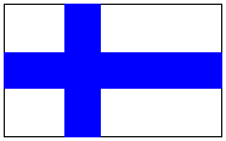
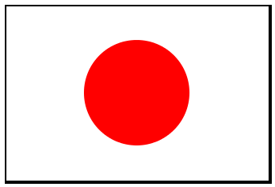

Koodausta kouluun: Aloita tästä
Koodausta kouluun materiaali soveltuu ohjelmoinnin opettamiseen peruskoulun 5.- 9.luokilla.
Voit aloittaa ohjelmoinnin vaikka sinulla ei olisi aikaisempaa kokemusta aiheesta. Seuraamalla "Aloita tästä"-osion ohjeita saat yleiskuvan siitä mitä on Racket-ohjelmointi.
Jakson lopuksi osaat ohjelmoida mm. nämä kuvat:



1 Esivalmistelut
Jos et jostain syystä pysty heti asentamaan DrRacketiä, voit aloittaa Racket-ohjelmoinnin käyttämällä WeScheme-sivustoa http://www.wescheme.org/. Voit tehdä kaikki "Aloita tästä"-osion harjoitukset WeSchemellä. Jatkon kannalta suosittelemme kuitenkin DrRacketin asentamista.
1.1 Asenna DrRacket
DrRacket on avoimen lähdekoodin ohjelmisto, jonka voit ladata ilmaiseksi täältä: http://racket-lang.org/download/
1.2 Valitse kieli
Voit valita kieleksi myös "Racket". Silloin jokainen kooditiedosto täytyy aloittaa rivillä: #lang racket
Valitse DrRacketin valikosta: Language → Choose language → Teaching languages → Beginning student → OK.
Lopuksi paina "Run" DrRacketin oikeasta yläkulmasta.
Olet nyt valmis aloittamaan ohjelmoinnin.
2 Peruslaskuja
Ohjelmointi on helpointa aloittaa peruslaskuilla, ja samalla tutustumme ohjelmointiympäristön, DrRacketin, käyttöön.
2.1 Yhteen-, vähennys-, kerto- ja jakolasku
DrRacketissä on kaksi ikkunaa, kirjoita alempaan ikkunaan eli REPL:iin seurava Racket-lauseke ja paina <enter>.
(+ 1 2)
Kokeile myös näitä:
(- 10 6) (* 3 4) (/ 20 5) (+ 1 2 3 4 5 6 7 8 9)
kaikki Racket-lausekkeet alkavat ja loppuvat sulkuihin
ensimmäisen sulkumerkin jälkeen kerrotaan "mitä tehdään", eli kirjoitetaan kutsuttavan funktion nimi, sen jälkeen annetaan funktion parametrit
2.2 Yhdistettyjä laskutoimituksia
Jos halutaan yhdistellä laskutoimituksia, Racket-lausekkeet pitää asetella sisäkkäin.
Tässä muutamia esimerkkejä:
\(18-5+7\) |
| |
\[\frac{12-3}{2+4}\] |
|
3 Piirtotyökaluja
Peruslaskutoimiukset sisältyvät Racket-kieleen. Kuvioiden piirtämiseen tarvitaan kuitenkin erillinen kirjasto. Kirjoita DrRacketin ylempään ikkunaan seuraava koodirivi ja paina "run" niin saat kirjaston sisältämät funktiot käyttöösi.
Jos käytät WeScheme-sivustoa, voit hypätä suoraan kohtaan Peruskuviot.
(require 2htdp/image)
3.1 Peruskuviot
3.1.1 Ympyrä
Voit palauttaa edellisen REPL-kutsun painamalla Ctrl + nuoli ylös. Näin pääset kokeilemaan kätevästi parametrien vaikutusta.
Kirjoita seuraava rivi DrRacketin REPL:iin (alempi ikkuna) ja paina <enter>. Kokeile muuttaa ympyrän kokoa ja väriä.
(circle 50 "solid" "red")

3.1.2 Suorakulmio
Suorakulmion piirtämiseen tarvitaan yksi parametri lisää. Kokeile vaihtaa "solid":in tilalle "outline".
(rectangle 200 100 "solid" "blue")

3.1.3 Kolmio
Löydät lisää piirtofunktioita täältä: http://docs.racket-lang.org/teachpack/2htdpimage.html
(triangle 100 "solid" "yellow")

3.1.4 Tähti
(star 75 "solid" "green")

3.2 Nimeäminen
REPL:ssä kokeilemasi kuviot eivät tallennu tiedostoon. Siksi koodi kannattaa kirjoittaa DrRacketin ylempään ikkunaan eli määrittelyikkunaan (definitions window). Määrittelyillä annetaan nimiä koodinpätkille, jotta niitä voidaan uudelleenkäyttää myöhemmin. Anna nyt piirtämillesi ympyrälle nimi "YMPYRÄ" kirjoittamalla seuraava koodi ylempään ikkunaan ja painamalal "run":
Tee sama suorakulmiolle:
Huomaa, että vaikka painat "run" REPL:iin ei ilmesty mitään. YMPYRÄ ja SUORAKULMIO ovat silti olemassa ja voit kutsua testata niitä REPL:stä kirjoittamalla YMPYRÄ ja painamalla <enter>.